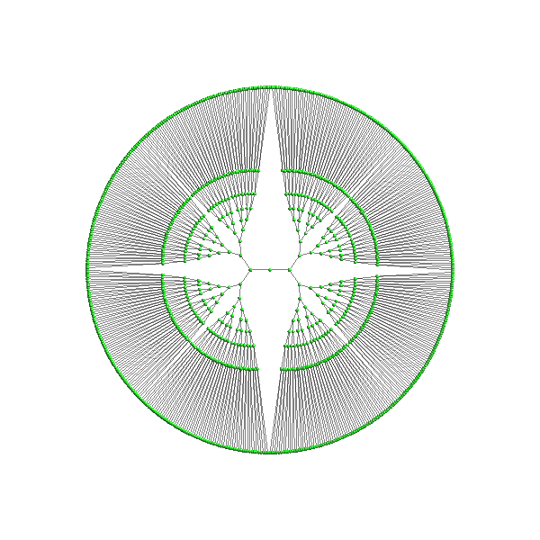

Note
Click here to download the full example code
Minmum Distortion Embedding with Anchored Constraints¶
import numpy as np
from fury.window import record
from helios import NetworkDraw
from helios.layouts.mde import MDE
# from https://github.com/cvxgrp/pymde/blob/main/examples/anchor_constraints.ipynb
depth = 9
n_items = 2**(depth + 1) - 1
edges = []
stack = [0]
while stack:
root = stack.pop()
first_child = root*2 + 1
second_child = root*2 + 2
if first_child < n_items:
edges.append([root, first_child])
stack.append(first_child)
if second_child < n_items:
edges.append([root, second_child])
stack.append(second_child)
# these are the indices of the nodes that we will pin in place
anchors = np.arange(2**depth) + 2**depth - 1
radius = 20
# pin the root to be at (0, 0), and the leaves to be spaced uniformly on a circle
angles = np.linspace(0, 2*np.pi, anchors.shape[0] + 1)[1:]
anchors_pos = radius * np.stack([np.sin(angles), np.cos(angles)], axis=1)
centers = np.random.normal(size=(n_items, 2))*5
centers[anchors] = anchors_pos.copy()
network_draw = NetworkDraw(
positions=centers,
scales=.4,
node_edge_width=0,
#colors=(1, 0,0),
edge_line_opacity=.5,
edge_line_color=(0, 0, 0),
marker='3d',
window_size=(500, 500),
edges=np.array(edges)
)
mde = MDE(
np.array(edges), network_draw,
constraint_name='anchored',
anchors=anchors.astype('float32'),
anchors_pos=anchors_pos.astype('float32'),
use_shortest_path=True
)
mde.start(
3, 300, 1,
record_positions=True, without_iren_start=False)
interactive = False
if not interactive:
import time
time.sleep(10)
mde.stop()
if interactive:
network_draw.showm.initialize()
network_draw.showm.start()
record(
network_draw.showm.scene, out_path='viz_mde.png', size=(600, 600))
Total running time of the script: ( 0 minutes 10.194 seconds)